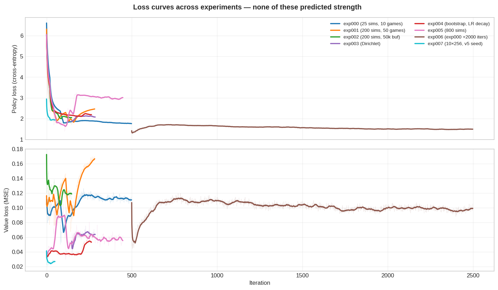
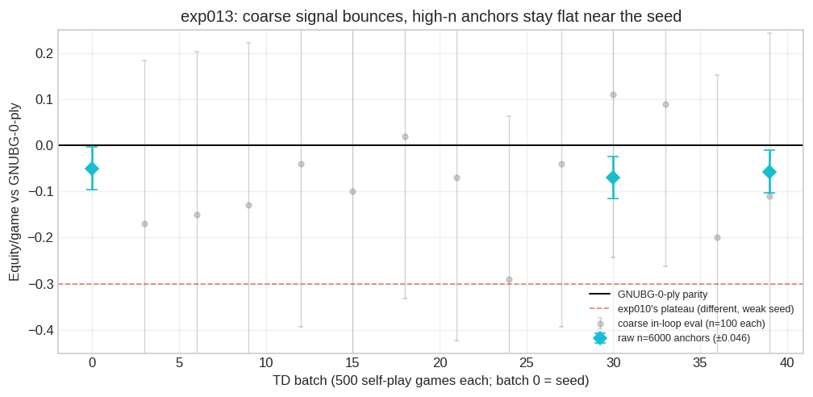
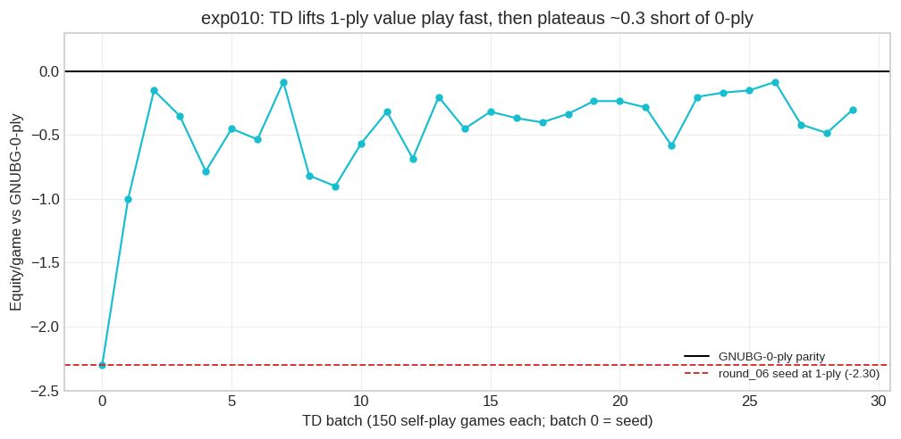

arena iter_0498 vs iter_0290 (n=50 @100 sims): 24-26, +0.060 ppg
gnubg iter_0498 vs GNUBG 2-ply (n=10 @200 sims): 0-10, -2.500 ppgRaccoon Self-Play Analysis
The self-play track: AlphaZero from scratch, exp000–exp007
This page documents the self-play track: eight experiments (exp000–exp007) testing whether AlphaZero-style self-play — a ResNet policy-value network trained on its own MCTS games — can reach GNUBG-competitive backgammon at this project’s compute scale (a single T4 GPU or a desktop CPU).
The track’s conclusion, up front: it cannot. Every self-play checkpoint loses 97–100% of its games against GNUBG 2-ply, at −2.2 to −2.5 points per game. Two levers produced statistically significant improvement — 800-simulation search (exp005) and sheer iteration count (exp006) — but at a rate that would need on the order of 17,000 iterations to close the gap. The bottleneck is the quality of the self-play training signal, not the amount of training. That conclusion motivated the pivot to supervised distillation from GNUBG, documented in the supervised & expert-iteration track, which produced every subsequent strength gain. The final experiment here (exp007) connects the two tracks: pure self-play from a strong supervised seed destroys the seed rather than improving it.
Each experiment below gets one section: motivation, setup, results, interpretation. Results are computed from the experiment logs at render time.
How to read the results
- Strength is measured in points per game (ppg) under cubeless money rules: a plain win scores 1, a gammon 2, a backgammon 3. Strength claims come from head-to-head play, never from loss curves.
- Arena evals pit two checkpoints against each other with MCTS at equal simulation counts. GNUBG evals play a checkpoint against the
gnubg-nnengine atlevel=world, which the adapter maps to full-width 2-ply — genuine “World class” checker play. (Early versions of these pages mislabeled this opponent “0-ply”; the underlying evals were always 2-ply.) - Sampling noise is large. The per-game equity SD is ~1.8, so a 100-game match has a standard error of ~0.18 ppg; differences under ~0.35 ppg at n=100 are not statistically significant. Several per-experiment results below are explicitly “n.s.” for this reason.
- Loss curves are fitting metrics, not strength metrics. Policy loss is cross-entropy against MCTS visit distributions; value loss is MSE against blended game outcomes. Both measure how well the network fits its own self-play targets — a moving, self-generated distribution. This track repeatedly found the two diverging from strength, in both directions.
The experiments at a glance
| Experiment | Configuration | Iters | Period | Headline result | Verdict |
|---|---|---|---|---|---|
| exp000 | 25 sims, 10 games/iter, 100k buffer | 499 | 2026-04-11 → 2026-04-12 | 0-10 vs GNUBG (n=10) | Pipeline works; play weak |
| exp001 | 200 sims, 50 games/iter, 500k buffer | 283 | 2026-04-13 → 2026-04-25 | −2.32 ppg vs GNUBG; no within-run gain | More compute/iter ≠ progress |
| exp002 | 200 sims, 50 games/iter, 50k buffer | 148 | 2026-04-27 → 2026-04-29 | −2.30 ppg vs GNUBG; loses to exp001 | Buffer size not the bottleneck |
| exp003 | 100 sims, 25 games/iter, 25k buffer, Dirichlet | 138 | 2026-04-30 → 2026-05-03 | iter_220 lost to iter_150 (−0.43) | Dirichlet noise didn’t help |
| exp004 | 100 sims, 25 games/iter, 25k buffer, Dirichlet, bootstrap α=0.5, LR decay | 264 | 2026-05-03 → 2026-05-06 | No detectable strength change | Value targets not the bottleneck |
| exp005 | 800 sims, 25 games/iter, 25k buffer, Dirichlet, bootstrap α=0.5 | 448 | 2026-05-04 → 2026-05-28 | +0.38 ppg in 109 iters (p≈0.035) | 800 sims: best self-play lever |
| exp006 | exp000 settings, resumed from iter_0498 | 2000 | 2026-05-07 → 2026-05-13 | +0.27 ppg over 2000 iters (p≈0.024) | Plateau slow, not absolute — too slow |
| exp007 | 800 sims, 8 games/iter, 25k buffer, 10×256 net, v5 supervised seed | 50 | 2026-06-09 → 2026-06-14 | Regressed −1.74 ppg vs its seed | Self-play destroys a strong seed |
All experiments use the default 6×128 ResNet except exp007 (10×256). exp000–exp002 and exp005 ran on a T4 GPU spot VM; exp003, exp004, exp006, and exp007 ran on desktop CPUs. The Iters column counts logged training iterations — exp003 resumed from an existing checkpoint at iter 148, and exp006 continued exp000’s counter from 499.
exp000 — pipeline validation
Motivation. First end-to-end run: does the full pipeline hold up — the 26-channel encoder, GPU training, spot-VM preemption recovery — and what does baseline learning look like at minimal settings?
Setup. 25 sims, 10 games/iter, 100k replay buffer, 499 iterations on the T4.
Results.
Policy loss fell steadily from ~6.5 to ~1.77; value loss drifted slightly up (~0.097 → ~0.112). Self-play games showed a persistent +0.3 ppg bias toward player 0 across all 500 iterations, even though the opening roll is verified 50/50 and random-vs-random play scores +0.04 ± 0.04 over 3000 games (statistically zero).
Interpretation. The pipeline works, but the play is weak (0-10 vs GNUBG, ~34% of self-play games ending in gammon). The player-0 bias is not an engine bug: a small asymmetry in the raw network gets amplified by shallow 25-sim search and then reinforced by training on the resulting games. It shrank to ~+0.08 in exp001’s 200-sim setting, confirming the diagnosis — a useful thermometer for whether search depth is adequate to correct the raw network.
exp001 — more compute per iteration
Motivation. Does 8× the MCTS simulations and 5× the games per iteration translate into faster learning?
Setup. 200 sims, 50 games/iter, 500k buffer, fresh start, 283 iterations. ~27× slower per iteration than exp000 (~37.5 vs ~1.4 min).
Results.
arena iter_0112 vs iter_0498 (n=50 @100 sims): 32-18, +0.440 ppg
arena iter_0282 vs iter_0260 (n=50 @100 sims): 27-23, +0.120 ppg
gnubg iter_0112 vs GNUBG 2-ply (n=50 @200 sims): 1-49, -2.220 ppg
gnubg iter_0282 vs GNUBG 2-ply (n=50 @100 sims): 0-50, -2.320 ppgPolicy loss dropped early (~4.4 → ~2.0) then flattened; value loss rose clearly (~0.105 → ~0.140). iter_112 beat exp000’s final checkpoint (+0.44 ppg), but the within-experiment check — iter_282 vs iter_260, the clean test of continuing progress — showed nothing (+0.12 ppg, n.s.), and GNUBG performance did not improve between iter_112 (−2.22) and iter_282 (−2.32) despite 170 more iterations.
Interpretation. The cross-experiment win over exp000 only shows “more compute + more training beats less”; the flat within-run strength and flat GNUBG results show exp001 itself had plateaued. The rising value loss is not masking hidden improvement — no improvement is visible in head-to-head play either.
exp002 — smaller replay buffer
Motivation. exp001’s 500k buffer holds ~100 iterations of positions, so the network fits a mix of old (weaker) and new play. Does a 50k buffer — cycling in ~10 iterations, always training on fresh data — fix the rising value loss and the plateau?
Setup. exp001’s config with --replay-size 50000, fresh start, 148 iterations.
Results.
arena iter_0147 vs iter_0125 (n=50 @100 sims): 26-24, +0.300 ppg
arena iter_0147 vs iter_0282 (n=50 @100 sims): 20-30, -0.440 ppg
gnubg iter_0147 vs GNUBG 2-ply (n=50 @100 sims): 0-50, -2.300 ppgThe fitting side behaved exactly as hoped: faster initial descent, lower minima (value loss bottomed at ~0.103 vs exp001’s ~0.105 floor), less late drift. Strength did not follow: the within-run check was null (+0.30 ppg, n.s.), GNUBG result identical to exp001 (0-50, −2.30), and exp001’s iter_282 beat exp002’s final checkpoint head-to-head (−0.44 ppg).
Interpretation. Replay-buffer staleness affects loss curves but was not the strength bottleneck. Better fitting metrics, same weak play — the first clear instance of a pattern that recurs throughout this track.
exp003 — Dirichlet exploration noise
Motivation. Standard AlphaZero adds Dirichlet noise at the MCTS root to keep exploration alive. Was exploration collapse causing the plateau?
Setup. 100 sims, 25 games/iter, 25k buffer, Dirichlet α=0.3 / ε=0.25, resumed from a trained checkpoint at iter 148; abandoned at iter 284. First experiment to log MCTS visit entropy.
Results.
arena iter_0220 vs iter_0150 (n=100 @50 sims): 40-60, -0.430 ppg
arena iter_0280 vs iter_0150 (n=100 @50 sims): 48-52, -0.130 ppgVisit entropy sat flat at ~1.37 nats throughout — for context, a uniform distribution over a typical ~25 legal moves would be ~3.2 nats, so visits were already quite peaked, and Dirichlet noise neither collapsed nor diversified them. Strength went backwards: iter_220 lost to iter_150 outright (−0.43 ppg), and the end-of-run checkpoint was still level-at-best (−0.13, n.s.).
Interpretation. Exploration was not collapsing, and keeping it alive did not improve the policy prior. 130 iterations with noise produced zero improvement — the plateau is not an exploration problem.
exp004 — value bootstrapping and LR decay
Motivation. Self-play value labels are discrete terminal outcomes (±1/3, ±2/3, ±1) — noisy and extreme. Does blending in the smoother MCTS root Q (--value-bootstrap-alpha 0.5) fix the value head, and does an LR schedule reduce late oscillation?
Setup. 100 sims, 25 games/iter, 25k buffer, Dirichlet noise, bootstrap α=0.5, LR ×0.1 at iter 200; fresh start, 264 iterations on CPU.
Results.
arena iter_0180 vs iter_0100 (n=50 @100 sims): 26-24, +0.020 ppg
arena iter_0260 vs iter_0200 (n=50 @100 sims): 27-23, +0.120 ppg
arena iter_0260 vs iter_0200 (n=50 @100 sims): 21-29, -0.320 ppgValue loss came out ~3× lower than exp001/exp002 (0.038–0.053 vs 0.105–0.140) — as expected, since the targets are smoother. Strength was unchanged: no detectable gain from iter_100 to iter_180 (+0.02, n.s.) nor across the LR decay (iter_260 vs iter_200: −0.10 combined over 100 games, n.s.). Gammon/backgammon rates were among the highest of any run (39%/29%).
Interpretation. Lower MSE on smoother targets does not mean a better value function. Neither bootstrapping nor LR decay moved play quality; value-target noise was not the binding constraint.
exp005 — 800-simulation search
Motivation. If self-play target quality is the bottleneck, deeper search at training time should produce qualitatively better MCTS policy targets. Scale simulations 8× over exp004 and keep everything else.
Setup. 800 sims, 25 games/iter, 25k buffer, Dirichlet, bootstrap α=0.5, on the T4 (~79 min/iter). The run splits into three phases: a clean phase (iters 1–109), a destabilized phase after a hardware restart (110–173), and a long watchdog-driven extension (173–447). Total ~459 GPU-hours over May 4–28.
Results.
arena iter_0109 vs iter_0040 (n=100 @100 sims): 58-42, +0.380 ppg
arena iter_0447 vs iter_0109 (n=100 @100 sims): 52-48, +0.050 ppg
gnubg iter_0109 vs GNUBG 2-ply (n=100 @100 sims): 0-100, -2.520 ppgThe clean phase produced the best learning signal of the whole track: the fastest policy-loss decline of any experiment, and the self-play backgammon rate fell from 41% to 27% — the sharpest game-quality improvement seen anywhere. The arena confirms it was real strength: iter_0109 beat iter_0040 by +0.380 ppg (58/100, p≈0.035) — a statistically significant gain in just 69 iterations, where exp001–exp004 found nothing.
Then the confounds hit. A spot-VM restart at iter 110 cold-started the replay buffer, and an LR schedule bug-fix cut the learning rate to 1e-4 at iter 115 (and 1e-5 at iter 155) right on top of it. Fitting metrics unravelled: policy loss climbed from ~1.7 back past 3.1 — above its random-init starting point — and the self-play backgammon rate jumped back to 44–48%. A local watchdog then auto-resumed the run through ~14 further preemptions to iter 447, with lr pinned at 1e-5; the metrics never recovered over those 290 iterations.
But the strength did not go anywhere: iter_0447 vs iter_0109 came out 52-48, +0.050 ppg (n.s.) — the network’s play was fully preserved across a 338-iteration stretch in which every fitting metric said it was degrading. Against GNUBG, iter_0109 still lost 0-100 (−2.52 ppg).
Interpretation. Two findings. First, 800-sim search is the strongest self-play lever found — the only intervention to produce a significant within-run gain, and quickly. Second, the extension is this track’s cleanest demonstration that loss does not track strength: the lr=1e-5 phase diffused the policy distribution, which made self-play games look worse on every counting metric (both sides play the same diffuse policy against each other — a coupling artifact), yet eval-time MCTS recovered the same play quality from the noisier prior. Metrics moved a lot; the player didn’t move at all.
exp006 — 2000 more iterations
Motivation. A clean falsification test: does sheer iteration count eventually break the plateau, with everything else held fixed?
Setup. Resumed exp000’s final checkpoint with identical hyperparameters (25 sims, no noise, no bootstrap, no schedule) for 2000 further iterations (499 → 2498), on the iMac CPU (~4.1 min/iter).
Results.
arena iter_2498 vs iter_0498 (n=200 @100 sims): 116-84, +0.270 ppgSlow, directionally consistent improvement: backgammon rate 15% → 11%, gammon rate 32% → 28%, policy loss 1.70 → 1.50 over the warm phase. The head-to-head confirms it: iter_2498 beat iter_0498 by +0.270 ppg (116/200, p≈0.024) — the first statistically significant gain of the track (exp005’s came later chronologically).
Interpretation. The plateau is slow, not absolute — but the rate settles the question. At +0.27 ppg per 2000 iterations, closing the ~2.3 ppg gap to GNUBG would take roughly 17,000 more iterations of identical training. Iteration count alone is not a viable path.
exp007 — self-play from the v5 supervised seed
Motivation. The supervised track produced v5: a 10×256 net distilled from GNUBG 4-ply analysis that beats this track’s best checkpoint (exp005 iter_0447) 93-7 and reaches −1.59 ppg vs GNUBG. The question this whole track was building toward: does high-sim self-play climb above that seed — or regress it toward the self-play signal-quality ceiling?
Setup. 800 sims, 8 games/iter, 50 iterations, lr 5×10⁻⁴, bootstrap α=0.5, Dirichlet noise, 25k buffer, warm-started from v5. iMac CPU, ~5.5 days.
Results. It regressed, completely:
| Opponent | Result | Equity | n |
|---|---|---|---|
| v5 seed (its own starting point) | 10-90 | -1.740 | 100 |
| iter_0447 (best self-play net) | 51-49 | +0.000 | 100 |
| GNUBG 2-ply | 1-99 | -2.240 | 100 |
Fifty iterations took a network that dominated iter_0447 93-7 (+1.98 ppg) to dead parity with it (51-49), losing 10-90 (−1.74 ppg) to its own starting point; the GNUBG result fell from −1.59 back to −2.24 ppg — nearly the pre-pivot level. Meanwhile the fitting metrics looked fine: policy loss fell cleanly (2.94 → ~1.93 in six iterations, then stable) as the network successfully adapted to its self-play targets.
Interpretation. Two mechanisms, both structural:
- Signal-quality ceiling. For self-play to improve a seed, MCTS must generate targets better than the current prior. MCTS(v5) at 800 sims reflects a player that loses 92% of its games to GNUBG 2-ply; training on those targets teaches the network to imitate a weaker player than the GNUBG 4-ply teacher that made the seed. The 25k buffer fully cycles in ~30 iterations, after which no trace of the supervised signal remains.
- Value-target mismatch. The v5 value head was calibrated to GNUBG money equities — smooth probability-weighted expectations. Self-play feeds it 50/50 blends of discrete terminal outcomes and MCTS Q — same numeric range, very different distribution — and pulled it steadily off calibration (value loss 0.022 → 0.028 over the run).
One thing did not regress: the architecture. Even after full erosion of the supervised signal, the 10×256 net sat at parity with iter_0447 rather than below it. The training signal, not capacity, was the problem — and the fix (keep the expert in the loop, on the learner’s own positions) became exp008 in the supervised track.
Cross-experiment trends


Three observations tie the track together:
- Game quality never approaches strong play. Strong-vs-strong backgammon produces ~15–20% gammons and ~1% backgammons; self-play here runs 30–48% and 11–48% respectively. Half or more of self-play games end in gammon/backgammon — the fingerprint of players who leave checkers stranded and walk into large losses. Only exp005’s clean phase and exp006’s slow drift bend the curves at all.
- Loss is not strength — in either direction. exp002’s better loss curves bought nothing; exp004’s 3×-lower value loss bought nothing; exp005’s metric “collapse” cost nothing; exp007’s clean loss descent accompanied a −1.74 ppg regression. The only trustworthy test is a head-to-head arena at equal search.
- Compute cost. Self-play dominates wall time everywhere; SGD is ~3 s/iter on the GPU (200–500 s on CPU). exp001 cost ~27× exp000 per iteration; exp005 averaged ~61 min/iter on the T4 and ~459 GPU-hours total.
Conclusions
- Pure self-play from random init plateaus far below GNUBG at this scale. Every checkpoint from exp000–exp006 scores −2.2 to −2.5 ppg (0–3% wins) against GNUBG 2-ply, and most interventions produced no within-run strength gain at all (exp001–exp004).
- Buffer size, exploration noise, value bootstrapping, and LR schedules were all ruled out as the binding constraint. Each moved fitting metrics; none moved play (exp002, exp003, exp004).
- Search depth at training time is the one self-play lever that worked: 800-sim MCTS produced a significant +0.38 ppg in 69 iterations (exp005). Iteration count also works, but ~25× slower per iteration of progress (exp006) — the combined rate math (~17k iterations to parity) rules out self-play-only scaling.
- Loss curves repeatedly misled in both directions — the decisive test is always a same-conditions arena match (exp005, exp007).
- Self-play destroys a strong supervised seed. MCTS under a GNUBG-losing prior generates targets weaker than the seed’s teacher, and discrete outcome targets decalibrate a money-equity value head; 50 iterations erased a +1.98 ppg advantage (exp007). Improving on a strong seed requires keeping a stronger-than-self signal in the loop.
What happened next
The pivot this track motivated is documented in the supervised & expert-iteration track: distill GNUBG analysis into the network (stages v1–v5), then keep the GNUBG oracle in the loop on the learner’s own positions (exp008 DAgger, the Phase A consolidation, and exp009, a 25-round scale-up). That track broke the −1.6 ppg wall and holds the current best result (~−0.37 ppg vs GNUBG 2-ply, exp009 round 6), though it plateaued ~0.4 ppg short of parity against its fixed 2-ply teacher.
Beyond DAgger — which converges to its teacher by construction — the leading candidate for surpassing GNUBG is TD(λ) self-play from the distilled seed: TD-Gammon-style 1-ply value learning is ~20 value evals per decision instead of 100–800 MCTS sims, has no teacher ceiling, and avoids both exp007 failure modes (no MCTS policy targets, no discrete-outcome value drift — the value head bootstraps toward the next position’s own equity estimate). Deeper-ply distillation was priced out as an alternative: GNUBG 3-ply labels cost ~53× 2-ply per label for a teacher we intend to outgrow anyway. exp010 is the first test of it.
exp010 — TD(λ) self-play from a distilled seed
Motivation. Conclusion 5 is that MCTS self-play destroys a strong seed. TD(λ) self-play should not: it regresses the value head toward the next position’s own equity estimate — not discrete terminal outcomes, not MCTS-visit targets — so neither exp007 mechanism applies. TD-Gammon proved this exact recipe reaches world class in backgammon. The question is whether it lifts our strong seed, and how far.
Setup. Warm-start from exp009 round_06 (10×256, 26-channel — the project’s best distilled net). Play 1-ply-greedy self-play (the dice supply exploration), compute forward-view TD(λ) targets (λ=0.7), and regress the value head only (policy head frozen). Local on the iMac CPU, ~150 games/batch across 3 workers, conservative lr 10⁻⁴, keep-best by the fixed external reference below (scripts/train_td.py, raccoon/train/td_selfplay.py).
The eval trap, and the fix. The first cut scored each batch against the frozen seed and read +1.9 ppg after one batch — implausible, and exactly conclusion 4 restated: a self-play net can beat its own seed while getting no stronger absolutely. Diagnostics confirmed the metric was hollow — the arena was not buggy (seed vs itself ≈ 0) and the win was not seed-specific (the net beat an independent exp009 checkpoint, round_25, equally, +1.95) — but the exp009 nets simply play 1-ply badly: their value heads were trained for MCTS, so “who is better at 1-ply greedy” is not “who is stronger.” Switching the reference to GNUBG at 0-ply — a fixed opponent the net never trains against, ~0.007 ppg weaker than 2-ply but ~100× cheaper and local via gnubg_nn — makes the number honest.
Results.

Two facts, against the honest metric:
- TD self-play works — it improves the seed, where MCTS self-play destroyed it. The seed plays 1-ply at −2.30 ppg vs GNUBG-0-ply; TD hauls it to ~−0.3 (best-of-batch −0.08) in the first few hundred games. This is the first self-play result on the project to lift a strong seed rather than wreck it — the value-only bootstrap from a money-calibrated head is the difference from exp007.
- But it plateaus fast, ~0.3 ppg short of 0-ply. The gain is banked by batch 2; batches 2–29 oscillate around −0.3 (n=60 eval, SE ~0.23) with no sustained climb. A few hundred games saturate the 1-ply value quality; more do not compound — a plateau after hundreds of games, not thousands, points to a recipe/capacity limit, not a data-volume one.
Interpretation. TD(λ) self-play is validated as a direction — the first method here to lift a strong seed via self-play — but on this recipe it stops ~0.3 short of even 0-ply parity, far from surpassing it. Reaching then surpassing 0-ply likely needs one of: a less greedy recipe (the run was pure argmax; temperature/exploration is untested), a stronger 1-ply starting point (distill to 0-ply parity first, then TD from there — the seed’s −2.30 start capped the ceiling), or the value-head changes tracked in the pretraining track’s open questions. The eval-metric episode also re-confirms conclusion 4 with force: a self-play loop must be scored against a fixed external reference, never its own seed.